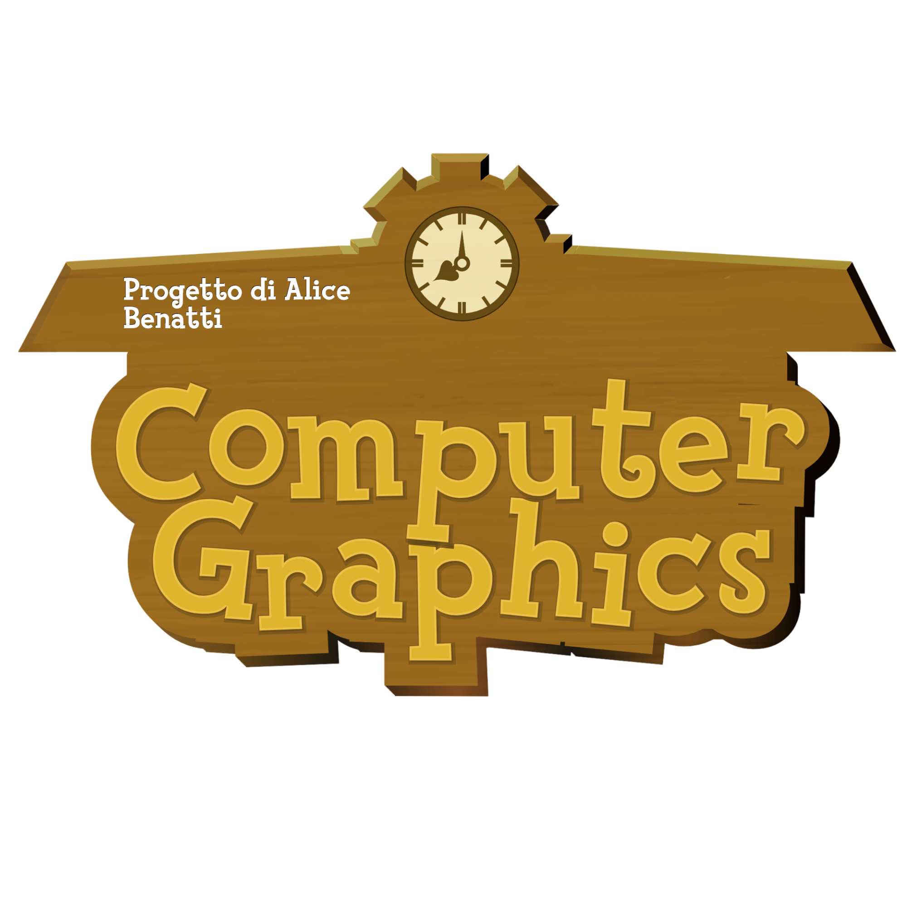

Relazione del progetto d'esame di Computer Graphics
Alice Benatti, matricola 0001241469
a.a.
2025/2026

Relazione del progetto d'esame di Computer Graphics
Alice Benatti, matricola 0001241469
a.a.
2025/2026
Il progetto consiste nella realizzazione di una scena 3D interattiva ispirata a un'isola del celebre videogioco Animal Crossing di Nintendo. Il giocatore controlla un personaggio che esplora un micro-mondo contenente una casa, alberi, fiori, nuvole e oggetti decorativi, osservato attraverso una visuale in terza persona.
L'applicazione è stata sviluppata in WebGL nativo, JavaScript e GLSL, integrando l'interfaccia
dat.GUI
per il controllo dei parametri in tempo reale. La scena combina modelli OBJ, texture 2D, illuminazione per-pixel
(Phong/Lambert)
e una deformazione cilindrica del terreno per ottenere il caratteristico effetto visivo del mondo "curvo".
Per rendere l'esperienza immersiva, è stata aggiunta una traccia musicale di sottofondo in ciclo continuo. L'audio viene avviato al primo click o tocco dell'utente (rispettando le restrizioni di autoplay dei browser) oppure direttamente tramite il controller audio dell'interfaccia.
Una scelta importante è stata mantenere, per quanto possibile, lo stile della camera tipico del gioco originale a cui il progetto si ispira. Per questo motivo è stata utilizzata una camera in terza persona che segue il personaggio da dietro e dall'alto, invece di una visuale libera completamente indipendente dal protagonista.
Per rispettare il requisito di interazione tramite mouse senza perdere questa impostazione, il mouse non controlla una rotazione completa a 360 gradi. La posizione del cursore produce invece una rotazione limitata e graduale della visuale tramite un effetto di parallasse. In questo modo l'utente può osservare meglio la scena mantenendo il carattere e la leggibilità della camera originale.
Anche la trasparenza degli oggetti vicini alla camera riprende una soluzione tipica del gioco di riferimento: quando la camera passa davanti alla casa o agli alberi, questi diventano progressivamente trasparenti e non impediscono la visuale del personaggio. L'effetto è stato realizzato interpolando l'opacità nel tempo, in modo da evitare cambiamenti improvvisi e rendere più naturale l'esplorazione.
La scena si compone dei seguenti elementi principali:
100 x 100 suddivisa in 80 x 80 celle,
deformata nel vertex shader;I modelli OBJ (caratterizzati da origini e scale arbitrarie) vengono omogeneizzati posizionandoli ed allineandoli tramite la matrice Modellante $M$, calcolata a partire dai loro Bounding Box locali:
Il sistema calcola le collisioni su due livelli:
computeBounds(positions): Calcola il Bounding Box locale dal file OBJ sconnesso dalle
trasformazioni.getTransformedBoundsXZ(bounds, matrix): Moltiplica gli 8 vertici per la matrice finale $M$,
determinando i limiti min/max nello spazio globale XZ usati nell'algoritmo di collisione AABB.Per la realizzazione dell'ambiente 3D sono stati utilizzati sia modelli creati su misura, sia risorse esterne distribuite con licenza libera/open-source:
La logica dell'applicazione è suddivisa nei seguenti moduli JavaScript:
main.js: punto d'ingresso, orchestrazione del caricamento delle risorse e avvio del loop di
gioco;renderer.js: gestione del contesto WebGL, stato grafico, uniform globali e draw call;shader.js: gestione dei programmi shader, buffer, attributi, texture e supporto all'instancing;
geometry.js: generazione delle geometrie procedurali (piani, cubi, griglie);objLoader.js: parsing asincrono dei file OBJ e calcolo dei limiti geometrici;math.js: libreria matematica personalizzata (vettori, matrici, proiezioni, look-at);camera.js: logica della camera in terza persona e gestione della parallasse;player.js e mobile-player.js: gestione del movimento, accelerazione, attrito e
collisioni;mobileControls.js e mobile-camera.js: costruzione ed elaborazione dei controlli
touch;gameObject.js: classi orientate agli oggetti (GameObject,
CloudObject, FlowerObject);
cycleDayNight.js: gestione del ciclo orario e interpolazione dei parametri di illuminazione;
const.js: parametri di configurazione globali, percorsi degli asset e costanti di gioco.L'esecuzione dell'applicazione segue una pipeline ben definita:
main.js crea il canvas e invoca renderer.js
per configurare il contesto WebGL, abilitare le estensioni a 32-bit (OES_element_index_uint),
compilare gli shader e attivare Depth Test ed Alpha Blending.Promise.all e funzioni di
fetch, vengono scaricati ed elaborati in parallelo sia i file OBJ (calcolando vertici, UV e
normali) sia le immagini di texture.
GameObject. Per i 50 alberi viene configurato l'Instanced Rendering
(drawMeshInstanced), memorizzando le matrici di trasformazione in buffer dedicati per ridurre le
draw call.
requestAnimationFrame) vengono eseguiti sequenzialmente
l'aggiornamento dell'input, la fisica del giocatore, le collisioni, l'aggiornamento delle nuvole e dei fiori,
l'interpolazione giorno/notte e il rendering delle geometrie.Il fattore di curvatura del mondo viene applicato all'interno del Vertex Shader, che modifica la coordinata $Y$ della griglia del terreno in funzione della distanza $Z$ dall'osservatore ($z_0$):
dove $k$ rappresenta l'intensità della curvatura (curvatureStrength). La Skybox viene renderizzata
con uno shader dedicato che calcola un gradiente sfumato tra orizzonte e zenit.
La visuale utilizza una matrice di proiezione prospettica (mat4Perspective). Il sistema di
trasparenza dinamica gestisce l'opacità degli ostacoli vicini alla camera (sotto la soglia
TREES.fadeRadius). Per garantire un corretto rendering degli elementi trasparenti senza artefatti
visivi, la pipeline opera in due passaggi:
gl.depthMask(true)).gl.depthMask(false)), attiva l'Alpha Blending
(SRC_ALPHA, ONE_MINUS_SRC_ALPHA) e disegna gli oggetti trasparenti ordinati.Il Fragment Shader calcola l'illuminazione per-pixel basandosi su tre componenti:
Il modulo cycleDayNight.js interpola linearmente colore della luce, intensità e gradiente dello
skybox tra quattro preset (Alba, Mezzogiorno, Tramonto, Notte) lungo una durata configurabile (5 secondi per
transizione).
La gestione delle texture nel modulo shader.js varia in base alla risoluzione delle immagini:
grass.png).GL_LINEAR e il clamp sui
bordi (CLAMP_TO_EDGE), evitando problemi di compatibilità WebGL.Il fragment shader supporta inoltre l'alpha cutout (discard dei fragment con opacità inferiore a una soglia), fondamentale per renderizzare la chioma degli alberi ed eliminare le porzioni trasparenti del fogliame.
Il movimento del personaggio è basato su un modello fisico con accelerazione, velocità massima ed attrito graduale. L'orientamento del modello si adatta automaticamente alla direzione del vettore velocità.
Le collisioni nello spazio bidimensionale XZ combinano due strategie:
Il render loop viene eseguito con requestAnimationFrame. Durante ogni frame vengono aggiornati
movimento, collisioni, camera, nuvole, fiori, dissolvenza degli alberi e della casa, illuminazione e render.
La luce può ruotare attorno alla scena. Inoltre gli alberi e la casa vicini alla camera vengono resi progressivamente trasparenti tramite interpolazione dell'opacità. Per le istanze trasparenti il renderer disabilita temporaneamente il depth write e disegna separatamente le facce anteriori e posteriori. Il fragment shader usa anche un alpha cutout per eliminare le parti vuote della texture delle foglie.
Le nuvole si muovono orizzontalmente e vengono riposizionate sul lato opposto quando superano il bordo dell'area di gioco. Una parte dei fiori ruota continuamente attorno all'asse Y, con velocità e direzione variabili.
Il pannello dat.GUI permette di selezionare manualmente Alba, Mezzogiorno, Tramonto o Notte,
oppure di attivare il ciclo automatico giorno/notte. I preset modificano colore e intensità della luce e i
colori del gradiente della skybox; nel ciclo automatico questi valori vengono interpolati gradualmente tra una
fase e la successiva. Sono disponibili anche i controlli per il fog e per la rotazione della luce.
WASD (con riscontro visivo sull'interfaccia a schermo) oppure D-pad
virtuale su dispositivi touch.A causa delle restrizioni di sicurezza del browser (CORS) sull'accesso ai file locali tramite protocollo
file://, l'applicazione deve essere servita tramite un server HTTP locale.
Dalla radice del progetto, è possibile avviare un server locale tramite Python:
python -m http.server 8000
Successivamente, aprire il browser (consigliato Google Chrome) all'indirizzo:
http://localhost:8000/main.html.